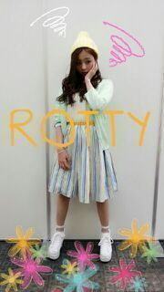

| 2014/04 08 Tue | blogたっぷりやぁん(/-＼* ) ろってぃ− |
こんばんわぁ〜(*´ー｀*)

ろってぃ−です.*
(ちょっとぶれた写真も貼っちゃうよ。)
許してにゃん.やよ♪
握手会 !! ありがとうございました.*
たくさんのRotty夢☆さんに会え、たくさんの46familyさんに会え、本当に幸せな時間でした ...*
握手会の私服は春らく,可愛い色使いをしてみました


メンバー誉めてもらい、嬉しさを隠しきれずにいました。てへ
スカートは一目惚れして買いました.*
そして足元を見てください。足首の所だけなんとなんと透けております。足首セクシーやろ てへ
はい そして、土曜日にオンエアされました
『 MUSIC FAIR 』.♪
握手会やコメントなどで既に感想を伝えてくれた皆様ありがとうございます!!!
実は、あの藤あや子さんの隣でっっっ ))))))
しかも 、サビパートをソロでっ )))))
歌わせて頂きました

本当、失礼致しました。
藤あや子さんのファンの皆様、こんな者(川村真洋)が藤あや子さんの隣で歌わせてもらったこと、そして私は ハモり担当だったので、ハモらせてもらったこと、本当に嬉しいです。ありがとうございました !!
『 MUSIC FAIR 』.♪
握手会やコメントなどで既に感想を伝えてくれた皆様ありがとうございます!!!
実は、あの藤あや子さんの隣でっっっ ))))))
しかも 、サビパートをソロでっ )))))
歌わせて頂きました
本当、失礼致しました。
藤あや子さんのファンの皆様、こんな者(川村真洋)が藤あや子さんの隣で歌わせてもらったこと、そして私は ハモり担当だったので、ハモらせてもらったこと、本当に嬉しいです。ありがとうございました !!
そしてそして1日〜3日の3日間には
ろってぃ−、まいやん、ななせの３人で 関西を中心にキャンペーンをして来ました。
生放送以外にも、たくさん番組ロケ、ラジオ、雑誌撮影などをやってきました

〜TV〜
☆5/5放送 『 MUSIC EDGE + next style』( MBS )
☆『 おはようコール 』 ( ABCテレビ )
☆『 す・またん 』( YTV )
☆『 MJ 』( MJTV )
〜雑誌系〜
・大阪道頓堀等の 大きなスクリーン街頭ビジョン等の撮影。
・雑誌『 GOODROCKS！』表紙&内面特集
・ファッション雑誌撮影 『 ガールズスタイル 』( 関西限定 )
〜ラジオ〜
・『 うたバッカ 』(MBS 4/4 ぁ、過ぎてる。)
・『 FMサウンドポケット なみはな 』( NHK大阪放送 )
・『ガチキン』( ABCラジオ )
・『 charge！』( FM滋賀、4/10放送 )
・大阪キューズモール公開ラジオ収録 ( 4/9 放送 )
・』
これが今ろってぃ−のわかる詳細です.♪
よろしくお願い致します＼(^o^)／
ありがとうございました
のし。

Rotty.
コメント(189)
2014/04/08 20:06